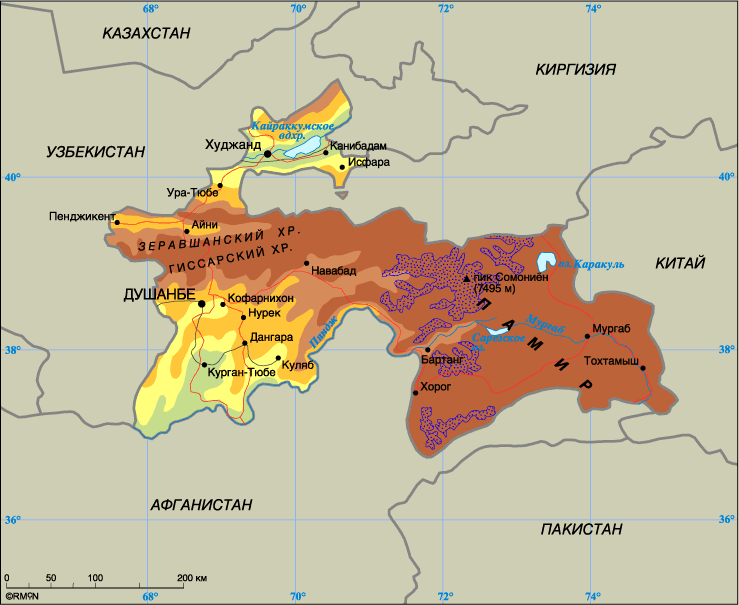
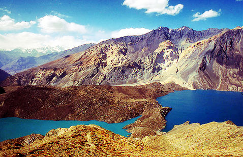

География Таджикистана в краце
Таджикистан расположен в Центральной Азии. Не имеет выхода к Мировому океану. Общая протяжённость границ Таджикистана составляет 3 651 км. Страна имеет границы с Афганистаном (1356 км), Узбекистаном (910 км), Киргизией (630 км), Китаем (519 км)

Физико-географическое положение
93 % территории Таджикистана из 142 970 км² занимают горы, относящиеся к горным системам Средней Азии — Памирской и Тянь-Шаньской. На северной границе располагается Ферганская котловина, длиной 300 км и шириной до 170 км. Максимальная протяжённость с северо-запада на юго-восток составляет 700 км, с севера на юг — 350 км.
Преобладает травянистая и полукустарниковая растительность.
Озёра

Крупнейшие озёра:
Каракуль
Яшикуль
Шоркуль
Булункуль